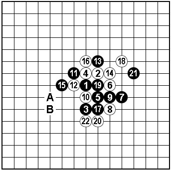
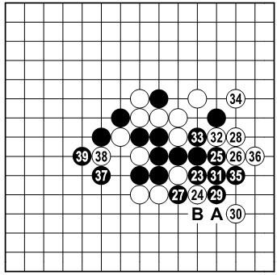
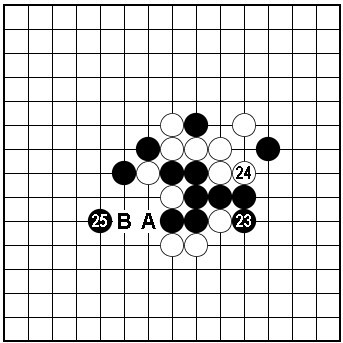

关于明星的一个变化
#1 关于明星的一个变化作者：心上人 发表时间：2010-6-4 8:56:22
经常有棋友问我“明星”终结的一些变化，因我尚未完成（估计也完不成），所以并非有所保留。之前也只是对几个分支有过涉及，前天在“爱五子棋论坛”见有关黑21变化的讨论，一时兴致所至，昨天抽时间解决了22防下的变化，“明星”黑17后的变化过于繁杂，难免让人有畏难之心。

图一：黑棋左边是发展方向，可选的点较多。例如23-A或B是显而易见的要点，但是白下方二子对黑棋左边的进攻有牵制。黑右边子力虽无胜机，但有利用价值，尤其是如能制约白下方二子，那么左边即可安逸的做棋。

图二：黑23是基于以上分析很自然的一手，白24只有两个选择。本图的24时，黑25~35局部定型留下余味。再回左边走37位先手！招法紧凑。38最强防，39暗伏VCF手段，以下黑胜还是容易解决的。
如36-A，37-B后，黑左边依然是37、39关联要点。

图三：白24防上，黑25黑胜。白26强防不多，A、B两点最强。由于右边黑棋还留有诸多借用手段，获胜只要注意左右配合既可。
［此帖子已被 有志青年 在 2010-6-4 9:02:18 编辑过］
［ 有志青年 于 2010-6-4 9:03:22 时奖励此帖[金币加 20 威望加1］
#2 Re:关于明星的一个变化作者：小帮帮 发表时间：2010-6-5 7:46:08
=======上图对应的爱五子棋谱代码如下，以便你拆解：========
h8i9h6h9i7j8k7j6j7h7g9g8i10j9f8h10i6k10i8i5l9h5k6k5l7m7j5m8l5m4l6l8k8m10m6n7f6f7e7e6d5d6
======================================================
这个变化是怎么处理的呢？
#3 Re:关于明星的一个变化作者：yoda 发表时间：2010-6-5 9:42:33
=======上图对应的爱五子棋谱代码如下，以便你拆解：========
h8i9h6h9i7j8k7j6j7h7g9g8i10j9f8h10i6k10i8i5l9h5k6k5l7m7j5m8l5m4l6l8k8m10m6n7f6f7e7e6d5d6g5h4d4e5f4e3e4f2g3g4c9d8e9f10d10g7d9f9e11
======================================================
#4 Re:关于明星的一个变化作者：逆刃 发表时间：2010-6-5 10:32:56
=======上图对应的爱五子棋谱代码如下，以便你拆解：========
h8i9h6h9i7j8k7j6j7h7g9g8i10j9f8h10i6k10i8i5l9h5k6k5g5
======================================================
=======上图对应的爱五子棋谱代码如下，以便你拆解：========
h8i9h6h9i7j8k7j6j7h7g9g8i10j9f8h10i6k10i8i5l9h5k6k8e7
======================================================
这样也能杀。
#5 Re:关于明星的一个变化作者：越狱行辕 发表时间：2010-6-5 19:51:01
=======上图对应的爱五子棋谱代码如下，以便你拆解：========
h8i9h6h9i7j8k7j6j7h7g9g8i10j9f8h10i6k10i8i5l9h5k6k5l7m7j5m8l5m4l6l8k8m10m6n7f6f7e7g6i4h3
======================================================
=======上图对应的爱五子棋谱代码如下，以便你拆解：========
h8i9h6h9i7j8k7j6j7h7g9g8i10j9f8h10i6k10i8i5l9h5k6k5l7m7j5m8l5m4l6l8k8m10m6l4
======================================================
请教这俩个局面如何杀